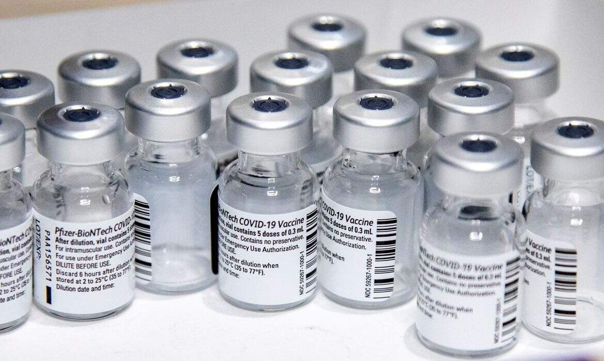

Saiba quais vacinas têm uso emergencial aprovado e quais aguardam aval da Anvisa
Imunizantes de Oxford/Fiocruz e do Instituto Butantan já estão em uso no país; veja situação dos outros imunizantes avaliados pela agência reguladora brasileira

A Agência Nacional de Vigilância Sanitária (Anvisa) recebeu neste sábado o segundo pedido de uso definitivo de uma vacina contra Covid-19, feito pela farmacêutica norte-americana Pfizer.
Antes, em 29 de janeiro, a Fundação Oswaldo Cruz (Fiocruz) fez requisição similar para o imunizante produzido pela Universidade de Oxford em parceria com o laboratório AstraZeneca. Os dois processos ainda estão em andamento na agência reguladora brasileira.
Além disso, a Anvisa já autorizou dois imunizantes para uso emergencial no país: a própria vacina de Oxford, em pedido feito pela Fiocruz, e a chinesa Coronavac, em requisição apresentada pelo Instituto Butantan.
Veja abaixo como está o andamento da autorização das vacinas no Brasil:
Uso emergencial aprovado
-
Coronavac
- Situação: Vacina aprovada pela Anvisa para uso emergencial no dia 17 de janeiro de 2021.
- Desenvolvedor: Sinovac (China)
- País de origem: China
- Feita em parceria com: Instituto Butantan (SP)
- Estados no Brasil em que foi testada: São Paulo, Rio de Janeiro, Minas Gerais, Distrito Federal, Paraná e Rio Grande do Sul, em 22 centros de pesquisa
- Voluntários: No Brasil, 13 mil (inicialmente eram 9 mil)
- Boas práticas de fabricação: Inspeção feita no Butantan entre 30/11 e 4/12. Certificação publicada em 21/12.
- Eficácia: Eficácia global de 50,38%. Eficácia de 78% em casos leves e de 100% em casos graves e moderados.
-
Vacina: ChAdOx1 nCoV-19 (Vacina de Oxford)
- Situação: Vacina aprovada pela Anvisa para uso emergencial no dia 17 de janeiro de 2021.
- Desenvolvedor: Universidade de Oxford e AstraZeneca
- País de origem: Reino Unido
- Feita em parceria com: Fiocruz, Unifesp e Ministério da Saúde.
- Estados no Brasil em que foi testada: São Paulo, no Centro Paulista de Investigação Clínica (Cepic), e na Bahia, na Instituição Obras Sociais Irmã Dulce
- Voluntários: 10 mil no Brasil
- Boas práticas de fabricação: Inspeção feita na Fiocruz entre 7/12 e 4/12. Certificação publicada em 23/12.
- Eficácia: Eficácia média de 70,4%. No regime de dosagem com duas completas atingiu 62,1% de eficácia. Com dose fracionada e dose completa, atingiu 90% de eficácia.
Pedido de uso definitivo em andamento
-
Vacina: mRNA BNT162, da Pfizer/BioNTech
- Situação: A Pfizer enviou à Anvisa o pedido de registro definitivo da vacina da Pfizer no dia 6 de fevereiro de 2021; 100% da documentação do pedido de registro está sendo analisada.
- Desenvolvedor: Pfizer e BioNTech
- País de origem: EUA/Alemanha
- Feita em parceria com: Centro Paulista de Investigação Clínica (Cepic), em São Paulo, e Instituição Obras Sociais Irmã Dulce, na Bahia.
- Estados no Brasil em que foi testada: São Paulo e Bahia.
- Voluntários: 2.900 no Brasil (São Paulo e Bahia) e mais de 43 mil no mundo.
- Boas práticas de fabricação: Certificação de duas fábricas publicada em 28/12. Uma fábrica já tinha certificação da Anvisa, mas ainda precisa enviar dados.
- Eficácia: 90% eficaz.
-
Vacina: ChAdOx1 nCoV-19 (Vacina de Oxford)
Submissão Contínua De Dados
-
Vacina: Ad26.COV2.S, da Johnson & Johnson
- Situação: Até o momento, a Janssen não solicitou uso emergencial da Vacina; a documentação tem sido avaliada como parte do processo de submissão contínua
- Desenvolvedor: Johnson e Johnson (Janssen-Cilag)
- País de origem: EUA
- Feita em parceria com: Grupo Hospitalar Conceição.
- Estados no Brasil foi testada: São Paulo, Rio Grande do Sul, Rio de Janeiro, Paraná, Minas Gerais, Bahia, Distrito Federal, Mato Grosso, Mato Grosso do Sul, Santa Catarina e Rio Grande do Norte.
- Boas práticas de fabricação: Solicitada, mas faltam dados da Janssen ainda.
- Voluntários: 45 mil voluntários no mundo. No mundo, além de Brasil, os participantes são Argentina, Chile, Colômbia, México, Peru, África do Sul e Estados Unidos.
- Eficácia: Eficácia de 66% na prevenção de doenças moderadas e graves; mais de 85% de eficácia contra doenças graves.
Pedido de uso emergencial em andamento
-
Vacina: Sputnik V
- Situação: A vacina ainda não recebeu a validação da fase 3 dos ensaios clínicos pela Anvisa.
- Desenvolvedor: Instituto de Pesquisa Gamaleya
- País de origem: Rússia
- Feita em parceria com: Tecpar (Paraná) / União Química
- Estados no Brasil em que será testada: Paraná e Bahia
- Eficácia: 91,6%, segundo estudo preliminar publicado pela The Lancet
- Pedido de autorização para Fase 3 de testes no Brasil
-
Vacina: Covaxin
- Situação: Precisa Farmacêutica apresentou em 5 de fevereiro de 2021 o pedido de autorização de pesquisa clínica de fase 3 para a vacina Covaxin no Brasil.
- Desenvolvedor: Bharat Biotech
- País de origem: Índia
- Feita em parceria com: Precisa Farmacêutica
- Fase 1 de testes em andamento
-
Vacina: UB-612
- Situação: A Dasa está em fase de ajuste do protocolo, a partir dos resultados da fase I.
- Desenvolvedor: COVAXX, subsidiária da United Biomedical Inc - pesquisa será conduzida pela Dasa e a Mafra, com recursos doados por MRV, Banco Inter e Localiza
- Estágio: Fase 2/3
- País de origem: China
- Feita em parceria com: Dasa
- Estados no Brasil com testagem: Não informado
- Voluntários: 3 mil
- Início dos testes: não foi informado.
-
Vacina: Instituto Biológico de Wuhan/ Sinopharm
- Situação: Segundo o Governo da Bahia, que firmou acordo com a farmacêutica, "por decisão do grupo chinês, eles desistiram de testar no Brasil"
- Desenvolvedor: Grupo Nacional Biotecnológico da China – CNBG/ "Sinopharm"
- País de origem: China
- Feita em parceria com: Bahiafarma (Bahia) e Tecpar (Paraná)
- Estados no Brasil em que seria testada: Bahia e Paraná.